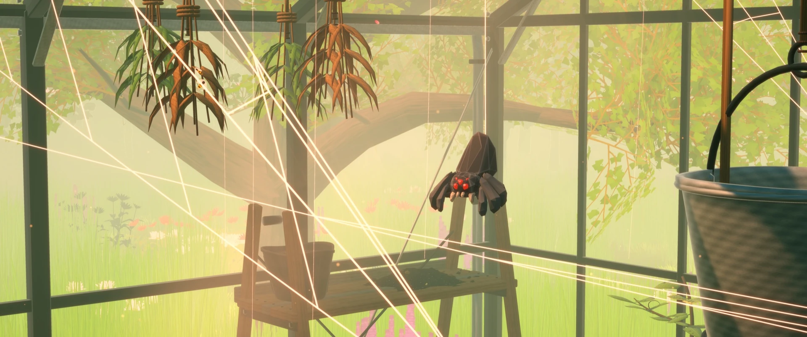
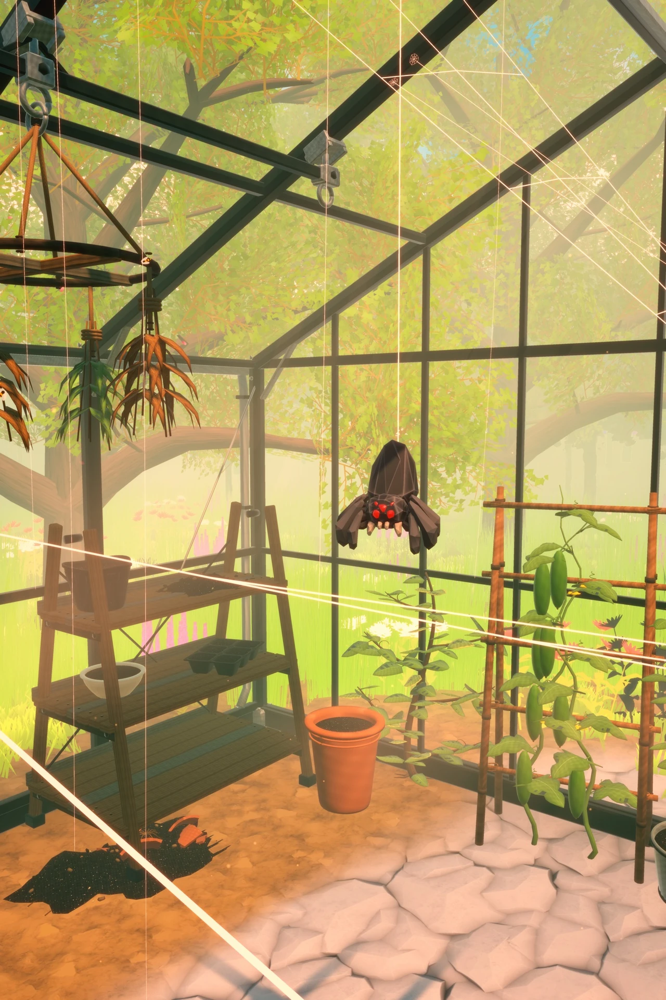
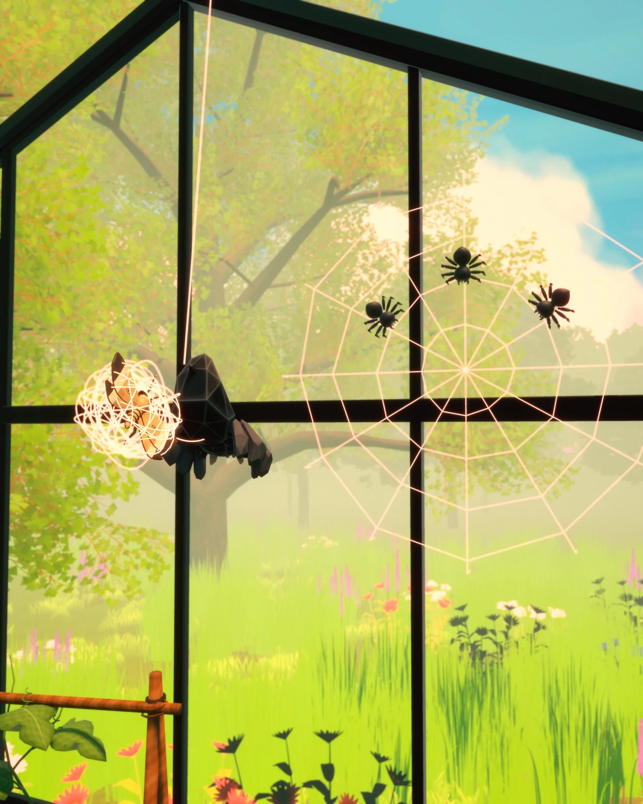
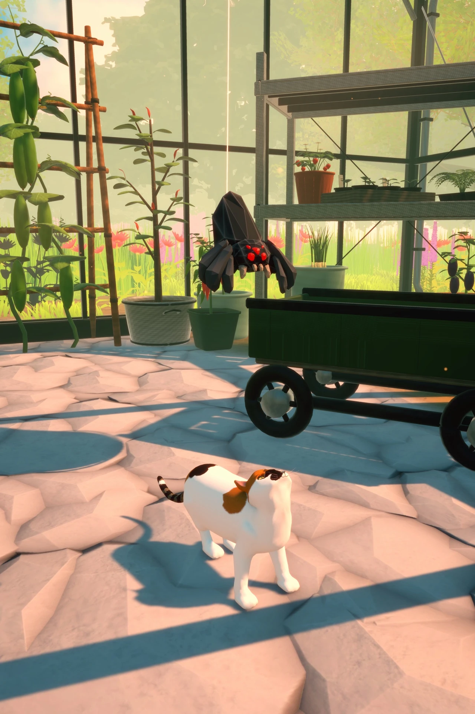

WONDERWEBBY.
A small spider. A garden of paths to make.
IN DEVELOPMENTUnity 6
- PROJECT
- Team project
- BRIEF
- IGB200 / QAGOMA
- PLAYTEST
- Desktop browser
- MY ROLE
- Concept, gameplay & camera development
- STATUS
- In development
PUBLIC PLAYTEST SCREENSHOTS

Webby among silk paths in the greenhouse. Screenshot from the official itch.io page.
Desktop browser playtest · in development
01 / THE IDEA
The project.
A Unity team exploration game for IGB200 / QAGOMA, where a spider builds silk routes through a greenhouse.
( 02 — MY CONTRIBUTION )
From the early idea to connected gameplay.
My work spanned early concept design and core gameplay development in Unity, with a focus on the silk system, hunting and feeding, and the camera and interactions that connect them.
Concept & core mechanics
I helped shape the early concept and main play loop: exploration and web building support hunting and feeding, while the routes left by play become the artwork revealed at the end.
Silk, hunting & feeding
I developed silk shooting, anchoring and traversal, alongside prey collection and feeding interactions. I integrated these mechanics with the team’s work, with teammate support on feeding.
Camera & interaction
I reworked camera behaviour for walls and ceilings, refined collision handling, and added contextual prompts and controller interaction improvements through iteration.
( 03 — PUBLIC PLAYTEST )
Inside the greenhouse.
Select an image to take a closer look.







Earlier prototype clips
Archived development footage, retained to show the earlier prototype. The current browser playtest is linked above.
EARLIER PROTOTYPE FOOTAGE
EARLIER PROTOTYPE / SILENTThe clip could not be played. Please use the video controls or open the source file.
Making connections between anchor points.
Silent clips from an earlier team presentation; these do not show the current public build.
Official links
Explore the game.
BACK TO SELECTED GAMES